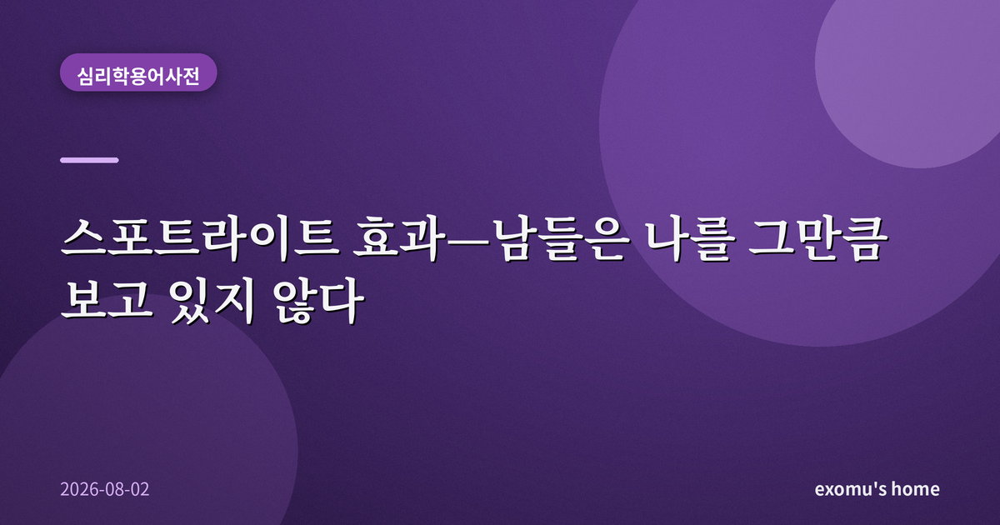
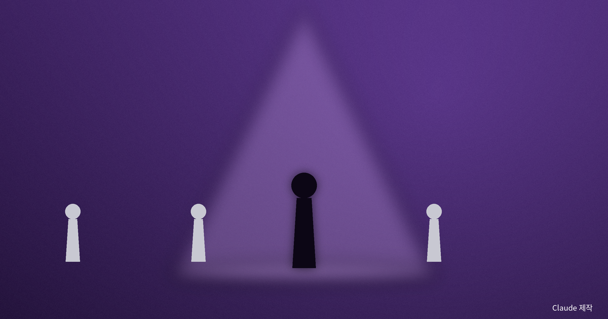
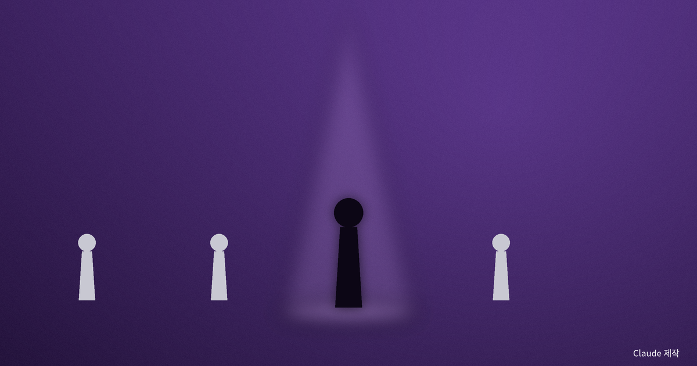
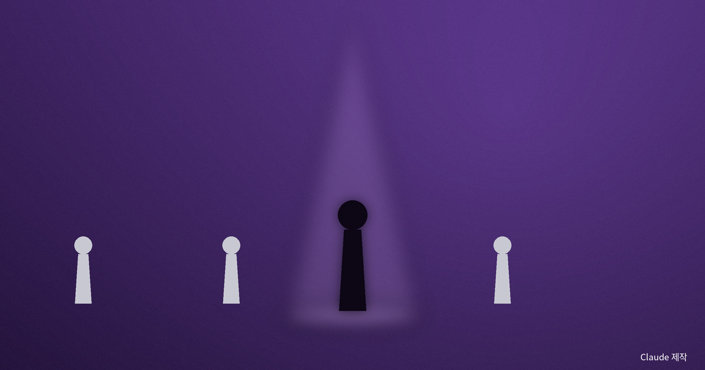

스포트라이트 효과 — 남들은 나를 그만큼 보고 있지 않다

무대 위에 선 듯한 착각
아침에 급하게 입고 나온 옷에 작은 얼룩이 있는 걸 지하철에서야 발견했다고 해 보자. 하루 종일 사람들이 그 얼룩을 볼까 봐 신경이 쓰이고, 마치 내 위에만 조명이 켜진 듯 온 세상이 나를 주시하는 것 같다. 그런데 저녁에 친구에게 물어보면 대개 이런 답이 돌아온다. 무슨 얼룩? 스포트라이트 효과란 바로 이것이다. 자신의 외모나 행동, 실수가 실제보다 훨씬 더 많은 사람에게, 훨씬 더 강하게 주목받고 있다고 과대평가하는 심리 경향이다.
이름 그대로다. 우리는 자기 머리 위에 늘 밝은 조명이 켜져 있다고 느낀다. 그러나 실제로 그 조명은 대부분 우리 상상 속에만 존재한다.

티셔츠 실험이 밝힌 것
이 현상은 2000년 무렵 미국의 사회심리학자 토머스 길로비치와 동료들이 진행한 실험으로 널리 알려졌다. 연구진은 한 학생에게 다소 민망한 얼굴이 큼지막하게 프린트된 티셔츠를 입혀 강의실에 들여보냈다. 그러고는 그 학생에게 물었다. 이 방 안의 몇 명이 당신 옷을 알아봤을 것 같습니까. 학생은 절반 가까이는 봤을 거라고 답했다.
그러나 실제로 그 티셔츠를 기억한 사람은 그 절반에도 한참 못 미쳤다. 우리가 스스로 두드러진다고 느끼는 정도와, 남들이 실제로 알아차리는 정도 사이에는 큰 틈이 있었다. 이후 여러 후속 연구에서도 결과는 비슷했다. 좋은 일이든 나쁜 일이든, 우리는 자신의 존재감을 일관되게 부풀려 짐작한다.
왜 우리는 이렇게 느끼는가
원인은 단순하다. 나는 나의 세계에서 언제나 주인공이기 때문이다. 내 하루의 모든 장면에 나는 빠짐없이 등장하고, 내 감정과 실수는 내 머릿속에서 가장 크게 울린다. 그 생생한 자기 경험을 기준으로 남들의 시선을 추측하다 보니, '나에게 이렇게 선명한 일이라면 남들에게도 그럴 것'이라고 넘겨짚게 된다.
이것은 자기 관점에서 벗어나 상대의 자리에서 세상을 보는 일이 얼마나 어려운지를 보여 주는 예이기도 하다. 상대에게 나는 그날 스쳐 간 수많은 사람 중 하나일 뿐이고, 그 역시 자기만의 무대 위에서 자기 걱정에 바쁘다. 모두가 자기 조명 아래 서 있으니, 정작 남을 비출 여유는 생각보다 적다.
여기에는 기준점의 문제도 겹친다. 우리는 어떤 판단을 내릴 때 가장 먼저 떠오른 정보에서 좀처럼 벗어나지 못한다. 나에게 가장 먼저, 가장 크게 떠오르는 것은 언제나 나 자신의 모습이다. 그 강렬한 출발점을 남의 시선을 추측할 때도 충분히 깎아 내리지 못하기 때문에, 결국 타인의 관심을 실제보다 부풀려 어림잡게 된다.

일상 속 스포트라이트
이 착각은 사소한 옷차림에만 머물지 않는다. 회의에서 말을 더듬은 순간, 발표 중 목소리가 떨린 순간, 모임에서 어색하게 웃은 순간을 우리는 밤새 되새기며 부끄러워한다. 남들은 그 장면을 이미 잊었는데도 말이다. 대인 불안이 큰 사람일수록 이 조명은 더 밝고 뜨겁게 느껴진다. 사소한 실수 하나가 자신에 대한 평판 전체를 무너뜨렸다고 확신하게 된다.
비슷한 결의 착각으로 조명 효과라는 것도 있다. 내 감정이나 상태의 미세한 변화까지 남들이 다 알아챈다고 믿는 경향이다. 조금 긴장했을 뿐인데 목소리 떨림을 모두가 눈치챘을 것이라 여기고, 살짝 얼굴이 붉어진 것을 온 방이 봤다고 확신한다. 그러나 내 안에서 요동치는 감정의 대부분은 겉으로 그만큼 드러나지 않는다. 우리는 자신의 내면을 스스로 지나치게 투명하게 들여다보고 있을 뿐이다.
조명을 끄는 법
스포트라이트 효과를 안다는 것만으로도 마음은 한결 가벼워진다. 다음에 실수로 얼굴이 화끈거릴 때, 스스로에게 물어보면 된다. 지금 이 장면을 일주일 뒤에도 기억할 사람이 이 방에 몇 명이나 있을까. 대개는 나 자신뿐이다.

역으로 이 사실은 작은 용기를 준다. 남들이 나를 그렇게까지 주시하지 않는다면, 새로운 옷을 입어 보거나 손을 들어 질문하는 일에 드는 심리적 비용도 실은 우리가 상상한 것보다 훨씬 작다. 무대 위의 조명은 대부분 내가 켠 것이다. 그 스위치가 내 손에 있다는 걸 기억하면, 우리는 조금 더 자유롭게 움직일 수 있다.